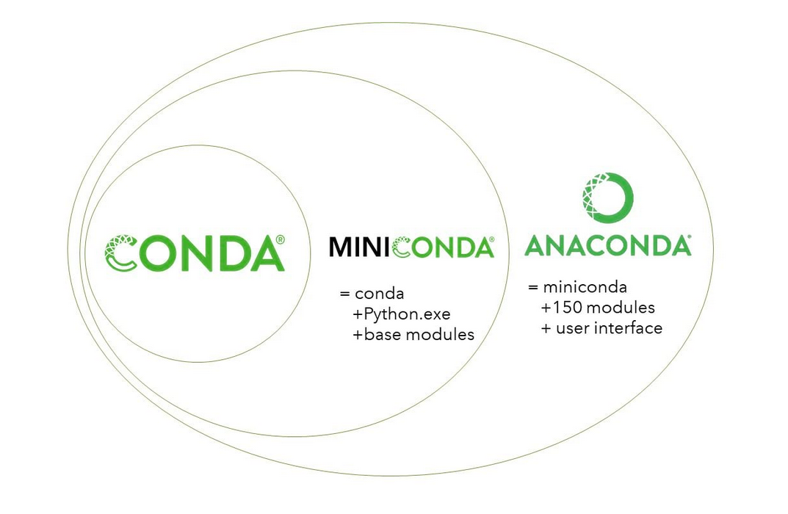

Environments, o entornos virtuales
Contents
Environments, o entornos virtuales#
Un environment, o entorno virtual, es una copia de Python que tiene como características estar aislada y operativa bajo un nombre específico. Este entorno matiene sus propios archivos, directorios y rutas de modo tal que se puede trabajar con específicas versiones de librerías de Python, o con el mismo Python, sin interferir sobre los demás proyectos.
El principal uso de estos entornos se basa en la separación de distintos proyectos y evitar así problemas de compatibilidad y de dependencias de paquetes a lo largo del desarrollo de productos.
El uso de estas herramientas no se evidencia a simple vista, y solo tiene sentido práctico si se tienen diferentes proyectos en la misma máquina. Por ejemplo, la ejecución de un script que hace uso de Python 2.8 puede dificultar a posteriori el uso de proyectos con Python 3.8, o ciertas librerías necesitan una versión específica para correr de la forma que están programadas debido a que cambian el nombre de funciones, o por obsolencia de ciertas características.
Es aquí que los entornos virtuales nos dejan crear ambientes separados para cada proyecto, donde especificamos tanto la versión de Python como los de los paquetes a usar, sin que ello tenga repercusiones en los demás entornos creados o usados.
Dentro de estos entornos, los más populares para Python son:
Virtualenv
Conda
pipenv
venv
Conda es popular entre la comunidad científica y de datos, mientras que pipenv entre los ingenieros de software.
El entorno conda y su uso dentro de la distribución Anaconda#
Antes de entrar a los comando usados para manejar los entornos virtuales, hablaremos sobres ciertos términos y conceptos para dejar en claro las diferencias, por ejemplo, entre Conda, Miniconda y Anaconda.
Conda es una herramienta agnóstica, es decir que es independiente del lenguaje de programación utilizado, para el manejo de paquetes (Conda puede instalar, actualizar y eliminar paquetes ) y de entorno virtuales.
Anaconda es la distribución de Python más popular para usuarios finales. Al instalar Anaconda, se obtiene Miniconda, Anaconda Navigator (una interfaz gráfica de usuario) y una selección de paquetes instalados.
Miniconda es una versión reducida de Anaconda, que al mismo tiempo es una distribución de Python. Al instalar Miniconda, se obtiene Conda, Python and y un número más chico de paquetes instalados.
Como podemos ver en la imagen, Conda está incluido en ambos Anaconda y Miniconda.
Fuentes:
https://uoa-eresearch.github.io/eresearch-cookbook/recipe/2014/11/20/conda/ https://towardsdatascience.com/introduction-to-conda-virtual-environments-eaea4ac84e28
Comandos conda para manejar entornos virtuales#
Con conda se pueden crear, activar, listar, exportar, eliminar y actualizar los entornos virtuales. Cambiar o moverse entre ellos se denomina activar el entorno.
Para estas acciones debemos abrir una terminal (Anaconda Prompt en Windows), y ejecutar los siguientes comandos:
Crear un entorno virtual#
conda create -n [nombre del entorno] [Opc: version de python o R]
Cuando creamos un entorno Conda podemos especificar la versión de Python que querramos utilizar. Si no especificicamos que versión de Python usar, el entorno usará la misma versión de Python que el Python base isntalado. Para saber a que versión corresponde, podemos correr el comando python --version.
Ejemplos:
conda create -n que_emocion_mi_primer_entorno
conda create -n que_emocion_mi_primer_entorno_pero_en_2_7 python = 2.7
Activar un entorno virtual#
conda activate [nombre del entorno]
Ejemplos:
conda activate que_emocion_mi_primer_entorno
conda activate que_emocion_mi_primer_entorno_pero_en_2_7
Listar los entornos virtuales#
conda info --envs
Exportar un entorno virtual#
conda env export > [archivo yml]
Ejemplo:
conda env export > entorno_a_exportar.yml
Importar un entorno virtual#
conda env create -f [archivo yml]
Ejemplo:
conda env create -f entorno_a_exportar.yml
Eliminar un entorno virtual#
conda env remove -n [nombre del entorno]
Ejemplo:
conda env remove -n que_emocion_mi_primer_entorno
Instalar paquetes en un entorno virtual#
conda install -c [canal] [paquete (Opcional = versión)]
Ejemplo:
conda install -c conda-forge rasterioconda install -c anaconda scipy = 0.17.3
La siguiente tabla ejemplifica las diferentes formas de instalar versiones de paquetes:
Instalar paquetes uno a la vez puede llevar a conflictos de dependencias. La documentación oficial de Conda recomienda instalar todos los paquetes al mismo tiempo para que los conflictos por dependencias se resuelvan automáticamente:
Ejemplo:
conda install "numpy>=1.11" nltk==3.6.2 jupyter
Machete de comandos Conda#
Fuentes:
https://conda.io/projects/conda/en/latest/user-guide/tasks/manage-environments.html https://towardsdatascience.com/introduction-to-conda-virtual-environments-eaea4ac84e28